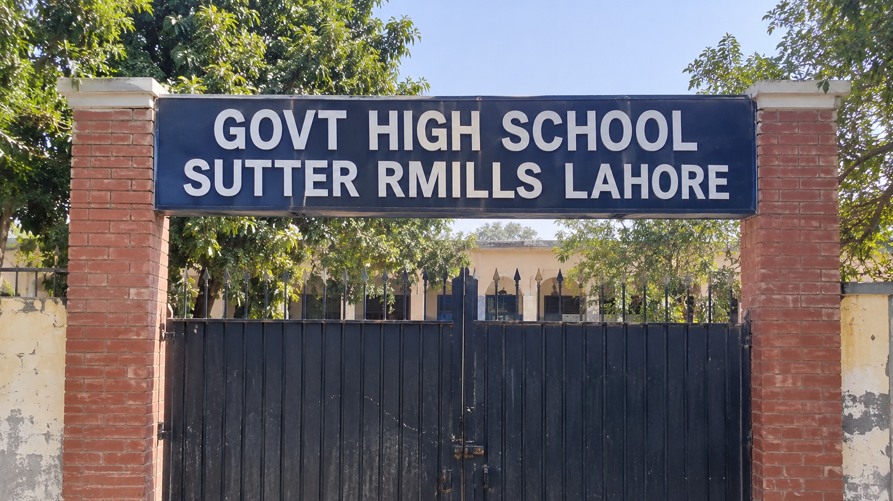
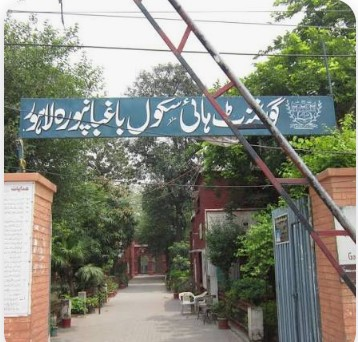
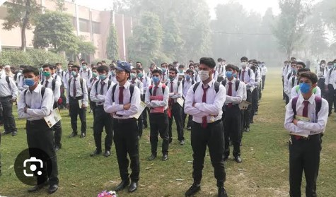
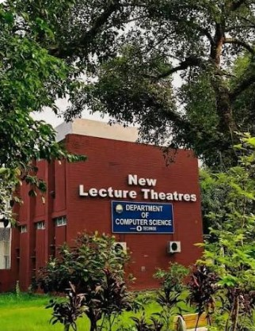

I passed out from Govt.elementary school sutter mills.
My elementary education was the first step of my learning journey. I faced difficulties in understanding new concepts and adjusting to the school environment.
Sometimes, limited resources and a lack of confidence made learning challenging.
However, the support of my teachers and family encouraged me to keep moving forward. These early experiences taught me the importance of patience and hard work

I passed my matric from baghbanpura school.
During my matriculation, academic pressure and increasing competition became major challenges.
Managing different subjects, completing assignments, and preparing for examinations required consistent effort.
Sometimes, understanding difficult topics was frustrating. I had to improve my time management and develop better study habits. This stage taught me discipline, responsibility, and determination.

I did my ICS from Shalimar college.
Intermediate was a more challenging stage because of the increased academic workload and higher expectations.
Preparing for examinations while maintaining good grades required dedication and sacrifices.
I sometimes struggled with difficult concepts and managing my daily routine.
Despite these hurdles,
I continued learning from my mistakes and working on my weaknesses. This period made me more confident and independent.

I am currently studying at UET LAHORE main campus.
My bachelor's journey is a new chapter filled with opportunities and challenges.
Adapting to university life, understanding advanced subjects, and balancing academic and personal responsibilities are not always easy.
Learning new technologies, developing programming skills, and improving my problem-solving abilities require continuous effort.
Sometimes, the pressure of assignments, projects, and deadlines tests my patience.
However,
I see every challenge as an opportunity to grow, improve myself, and build a successful future.